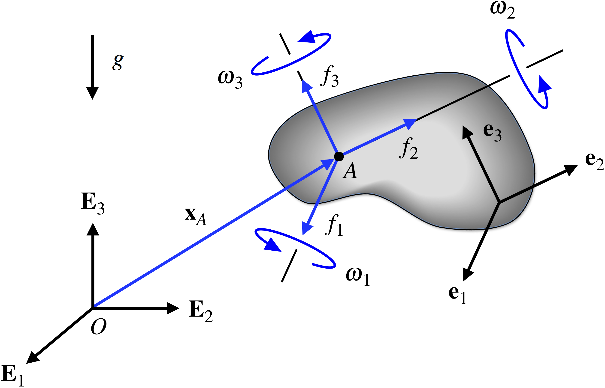
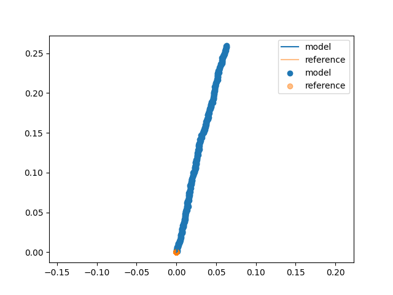
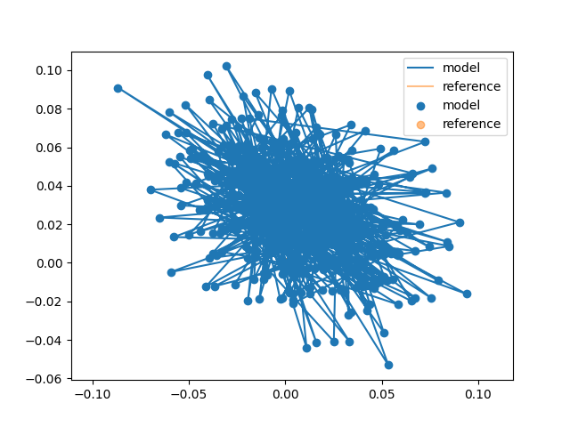

Reference Model: Strapdown IMU¶
- Author:
Buck Baskin @buck@fosstodon.org
- Created:
2023-09-19
- Updated:
2023-10-29
- Parent Design:
Overview¶
FormaK aims to combine symbolic modeling for fast, efficient system modelling with code generation to create performant code that is easy to use.
The Five Key Elements the library provides to achieve this user experience are:
Python Interface to define models
Python implementation of the model and supporting tooling
Integration to scikit-learn to leverage the model selection and parameter tuning functions
C++ and Python to C++ interoperability for performance
C++ interfaces to support a variety of model uses
This design focuses on an example of the “Python Interface to define models” to define a reference model for a strapdown IMU. This serves two purposes:
Provide a reference for implementing a strapdown IMU as a part of other models
Further exercise the FormaK interface to sand down rough edges
As a third consideration, this will also provide a reference design for how other reference models will be designed and presented in the future.
Solution Approach¶
The Strapdown IMU¶
What is a strapdown IMU?
A strapdown IMU is an IMU mounted to the vehicle of interest (instead of being mounted on a gimbal or on some reference point).
Definitions¶
This design will implement the strapdown IMU model defined by the source Strapdown inertial navigation | Rotations. The site is a joint resource from the mechanical engineering departments at Rose-Hulman Institute of Technology and UC Berkeley.

\(e_{i}\) axis of rigid body (1, 2, 3)
\(\omega\) vector of rotations of the rigid body
\(\omega_{i}(t) = \omega \cdot e_{i}\) IMU reading of rotation
\(g\) acceleration due to gravity
\(\ddot{x_{A}}\) acceleration of the rigid body at the IMU measurement point A
\(f_{i}(t) = (\ddot{x_{A}} - g) \cdot e_{i}\) IMU reading of acceleration (specific force)
{kind=link}
The reference design uses 3-2-1 Euler angles.

{kind=link}
{kind=link}
With the accelerations defined, we can then integrate the acceleration once into velocity and then twice into position.
Feature Tests¶
The “Rotations” resource also provides an implementation of the strapdown IMU model for tracking a tumbling smartphone.
The feature test will implement the strapdown model based on the data provided and revisions to the reference model suggested in the resource.
Roadmap and Process¶
Write a design
Write a feature test(s) 3A. Experiments 3B. Build a simple prototype
Pass feature tests
Refactor/cleanup
Build an instructive prototype (e.g. something that looks like the project vision but doesn’t need to be the full thing)
Add unit testing, etc
Refactor/cleanup
Write up successes, retro of what changed (so I can check for this in future designs)
Post Review¶
2023-10-29¶
This design has grown in time further than I would have liked. Originally, I’d aimed for 2 weeks to 4 weeks, and it’s now closer to 6.
A few things have stayed the same. The design remains intended to provide a reference for inclusion in other designs and I was able to learn from some of FormaK’s rough edges. Unfortunately, one aspect (simplify execution time) cropped up again and I did not reach a suitable resolution.
The few things that have stayed the same are notable because pretty much every aspect of this design has been adapted from the original.
Sympy, Quaternions¶
The math outlined above was largely replaced by using the Sympy Quaternion model. This was absolutely the correct decision and I should have done some more research before starting to see if Sympy had this type of rotation representation already. At latest, this should have been found in the experimental phase of the project. In the end, ~3 weeks could have been cut out of the timeline if I’d recognized this at the experimental phase.
Feature Testing¶
The feature test was also replaced wholesale. This was partly for convenience (I already have NASA data) but also because the NASA data comes with clearly defined motion information. The start of the data is pre-ignition and then there are also known times for ignition and liftoff. This pre-ignition data serves as a more test-able feature test because I can know the orientation of the IMU (provided by the NASA documentation) and perform a pseudo-static test to assert that the motion of the sensor data doesn’t move. This pseudo-static test made it easy to understand when the model wasn’t oriented correctly or incorrectly accommodating gravity. For example, something is off when there’s a 2g (19.62 m/s2) effect in what should be a static test.
The change in feature test also provided the motion for two extensions to the model beyond the basics: calibration for IMU orientation and calibration for IMU acceleration biases.
First, the IMU was rotated in all axis away from the nominal navigation frame, motivating the use of calibration to “remove” this in favor of reporting in neat and tidy vehicle aligned axis.
Second, the IMU exhibited acceleration bias that quickly caused non-zero motion even over relatively short time scales (~1 second). Some of the bias could be corrected, but some was also a random walk that would need to be modeled within the noise in a full filter implementation and corrected for via fusion with the onboard LIDAR system.


Unit Testing¶
The design also missed some straightforward opportunities for unit testing. Specifically, the final implementation has unit tests for static motion and circular motion that have straightforward closed-form references to compare to the IMU model.